Chapter 4 Creating Some Basic Plots
The base R contains many basic methods for producing graphics. We will learn some of them in this chapter. For more elegant plots, we will use the package ggplot2. We will use some simple datasets in base R to illustrate how to create some basic plots in this chapter. In this next chapter, we will discuss how to input our own data and transform them.
Reference: R graphics cookbook, R for data science, R Cookbook.
We will load the package tidyverse.
An R package is a collection of functions, data, and documentation that extends the capabilities of base R.
You have to install the package before you can use it.
- Load the library
- if we want to make it clear what package an object/ function comes from, use package name followed by two colons, like
dplyr::mutate().
4.1 Scatter Plot
Let’s take a look at the mtcars dataset. This dataset comes with base R.
head(mtcars) # this is a data frame
## mpg cyl disp hp drat wt qsec vs am gear carb
## Mazda RX4 21.0 6 160 110 3.90 2.620 16.46 0 1 4 4
## Mazda RX4 Wag 21.0 6 160 110 3.90 2.875 17.02 0 1 4 4
## Datsun 710 22.8 4 108 93 3.85 2.320 18.61 1 1 4 1
## Hornet 4 Drive 21.4 6 258 110 3.08 3.215 19.44 1 0 3 1
## Hornet Sportabout 18.7 8 360 175 3.15 3.440 17.02 0 0 3 2
## Valiant 18.1 6 225 105 2.76 3.460 20.22 1 0 3 1str(mtcars) # display the structure of the data frame
## 'data.frame': 32 obs. of 11 variables:
## $ mpg : num 21 21 22.8 21.4 18.7 18.1 14.3 24.4 22.8 19.2 ...
## $ cyl : num 6 6 4 6 8 6 8 4 4 6 ...
## $ disp: num 160 160 108 258 360 ...
## $ hp : num 110 110 93 110 175 105 245 62 95 123 ...
## $ drat: num 3.9 3.9 3.85 3.08 3.15 2.76 3.21 3.69 3.92 3.92 ...
## $ wt : num 2.62 2.88 2.32 3.21 3.44 ...
## $ qsec: num 16.5 17 18.6 19.4 17 ...
## $ vs : num 0 0 1 1 0 1 0 1 1 1 ...
## $ am : num 1 1 1 0 0 0 0 0 0 0 ...
## $ gear: num 4 4 4 3 3 3 3 4 4 4 ...
## $ carb: num 4 4 1 1 2 1 4 2 2 4 ...mpg: miles/gallon
wt: weight (1000lbs)
Scatter plot with base graphics
# x-axis: mtcars$wt
# y-axis: mtcars$mpg
plot(x = mtcars$wt, y = mtcars$mpg) # "x =", "y =" are optional
You can produce the same plot with plot(mtcars$wt, mtcars$mpg)
Scatter plot with ggplot2
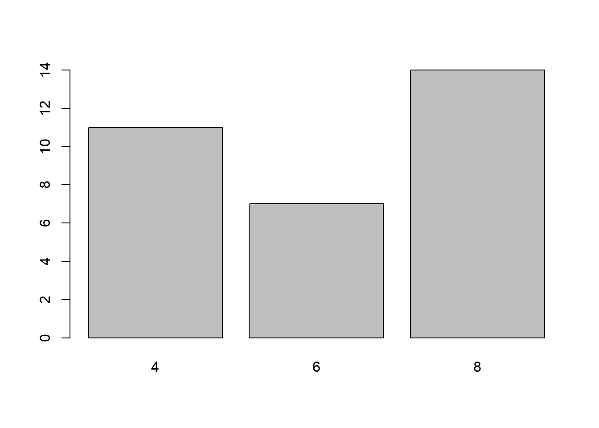
Scatter plot with base graphics (when you only have \(x\) and \(y\) but not a dataset)
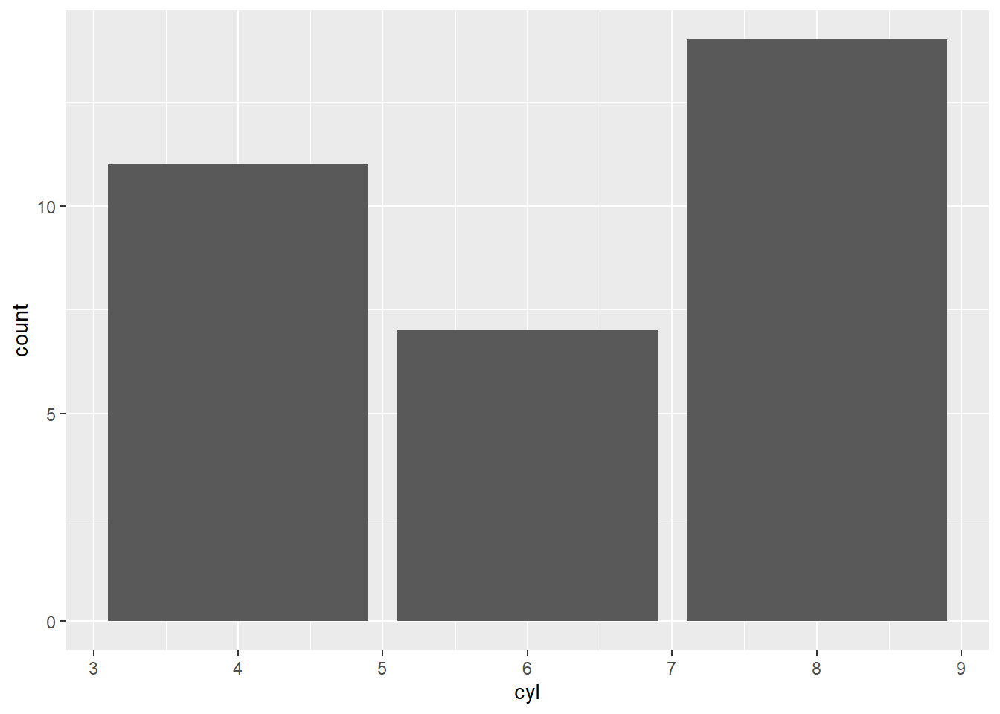
Scatter plot with ggplot2 (when you only have \(x\) and \(y\) but not a dataset)
set.seed(1)
x <- rnorm(100, 0, 1)
y <- 2 * x + rnorm(100, 0, 1)
ggplot(mapping = aes(x = x, y = y)) + # by default, data = NULL
geom_point() 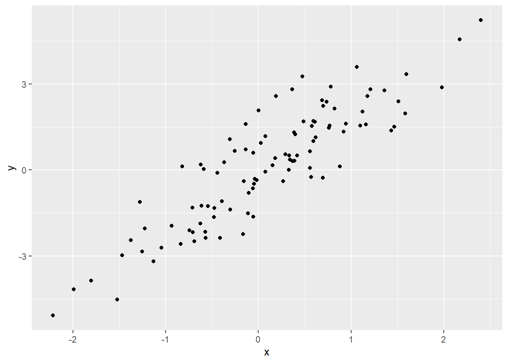
4.2 Line Graph
The dataset pressure (also in base R) contains the relation between temperature in degrees Celsius and vapor pressure of mercury in millimeters (of mercury).
Line graph with base graphics
# the only difference from a scatter plot is that we add type="l"
plot(pressure$temperature, pressure$pressure, type = "l") #l = line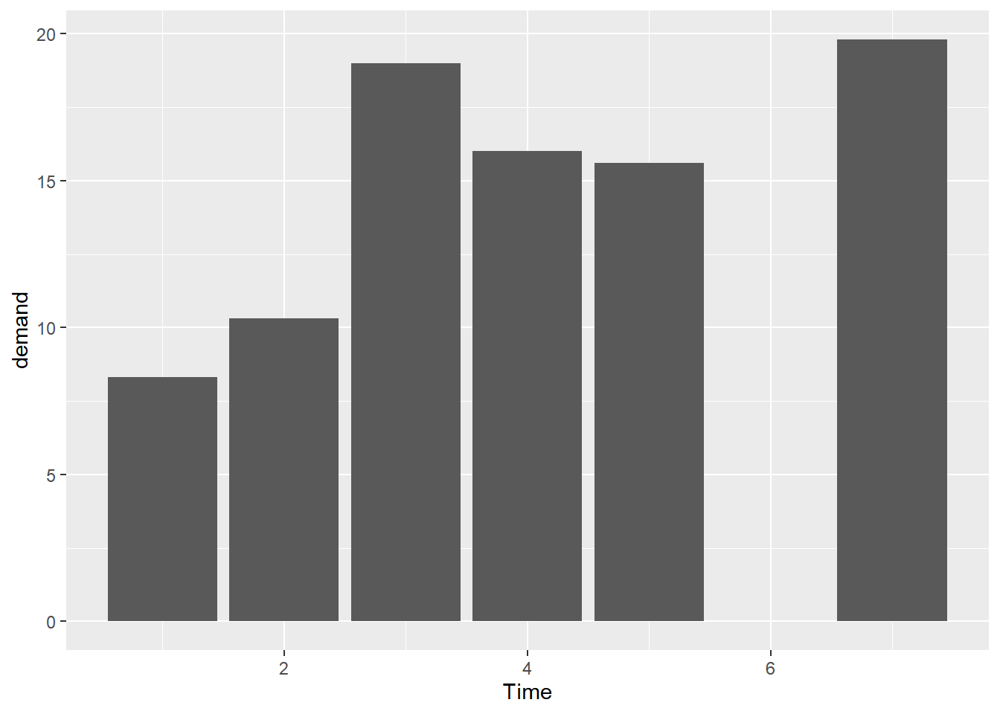
Line graph with base graphics with points
plot(pressure$temperature, pressure$pressure, type = "l")
points(pressure$temperature, pressure$pressure) # add some pointsLine graph with base graphics with another line and points (with color)
plot(pressure$temperature, pressure$pressure, type = "l")
points(pressure$temperature, pressure$pressure)
# the additional line may not have a physical meaningful
# just an illustration on how to add a line with base graphics
lines(pressure$temperature, pressure$pressure / 2, col = "red")
points(pressure$temperature, pressure$pressure / 2, col = "red") 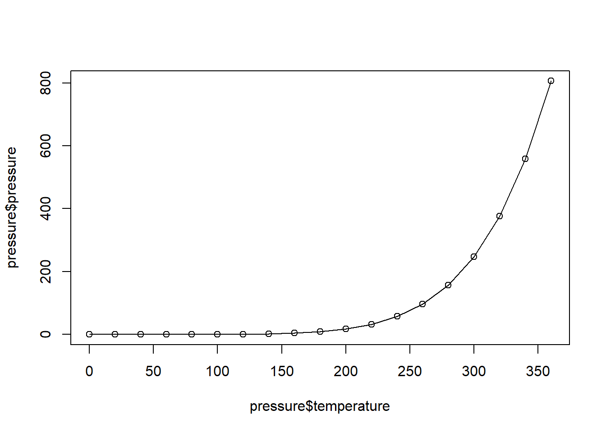
Colors in R You can go to https://www.r-graph-gallery.com/ggplot2-color.html and read more about colors in R.
For example, you can specify the color by name, rgb, number and hex code.
plot(pressure$temperature, pressure$pressure, type = "l", col = rgb(0.1, 0.2, 0.5, 1))
lines(pressure$temperature, pressure$pressure / 2, type = "l", col = 2)
lines(pressure$temperature, pressure$pressure * 2, col = "#8B2813")
lines(pressure$temperature, pressure$pressure * 3, col = "cornflowerblue")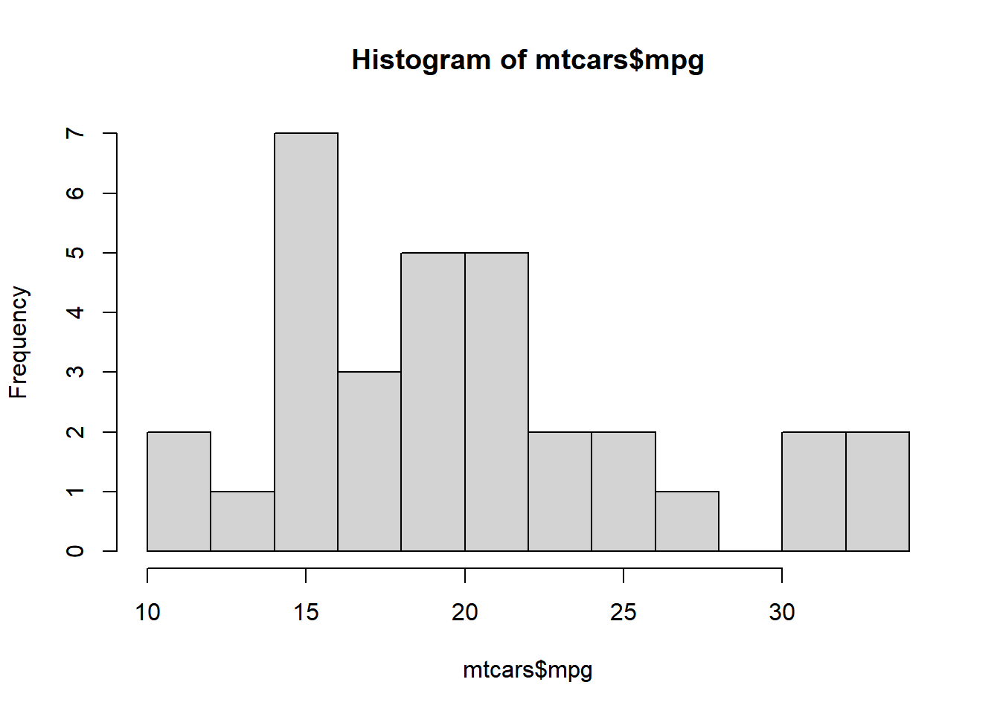
Line graph with ggplot2
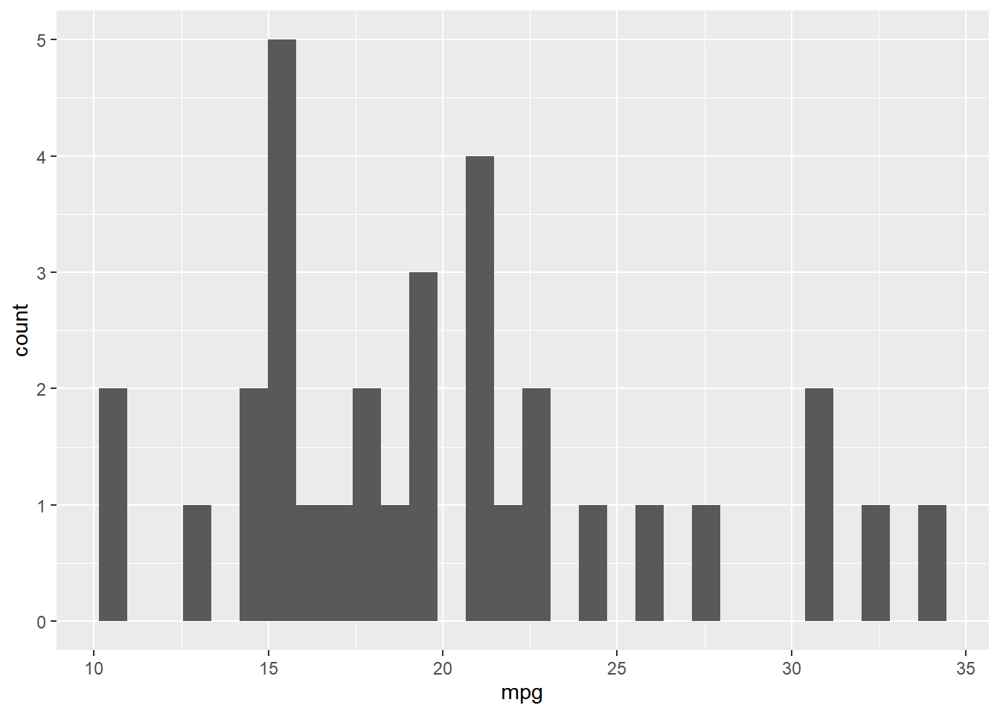
Line graph with ggplot2 with points
 Line graph with ggplot2 with another line and points (with color)
Line graph with ggplot2 with another line and points (with color)
ggplot(data = pressure, aes(x = temperature, y = pressure)) +
geom_line() +
geom_point() +
geom_line(aes(x = temperature, y = pressure / 2), color = "red") +
geom_point(aes(x = temperature, y = pressure / 2), color = "#8B2813")Remark: it is common with ggplot() to split the command on multiple lines, ending each line with a + so that R knows that the command will continue on the next line.
4.3 Bar Chart
Two types of bar charts:
- Bar chart of values. x-axis: discrete variable, y-axis: numeric data (not necessarily count data)
- Bar chart of count. x-axis: discrete variable, y-axis: count of cases in the discrete variable
Remark: for histogram: x-axis = continuous variable, y-axis = count of cases in the interval.
The BOD data set has 6 rows and 2 columns giving the biochemical oxygen demand versus time in an evaluation of water quality.
# instead of using head(BOD) and str(BOD), we can also change it to a "tibble"
# we can view the first few lines and the data structure
as_tibble(BOD)
## # A tibble: 6 x 2
## Time demand
## <dbl> <dbl>
## 1 1 8.3
## 2 2 10.3
## 3 3 19
## 4 4 16
## 5 5 15.6
## 6 7 19.8Bar chart of values with base graphics
# names.arg = a vector of names to be plotted below each bar or group of bars.
barplot(BOD$demand, names.arg = BOD$Time) 
Bar chart of counts with base graphics
In the dateset mtcars, cylis the number of cylinders in the car. The possible values are \(4, 6\), and \(8\). We first find the count of each unique value in mtcars$cyl:
To plot the bar chart, we use

Bar chart with values with ggplot2
We first make the Time variable to a factor:

What will happen if we do not make Time as a factor:

Bar chart of counts with ggplot2
4.4 Histogram
mpg in mtcars is the miles/gallon of the car. It is a continuous variable.
Histogram with base graphics

Histogram with base graphics

Histogram with ggplo2

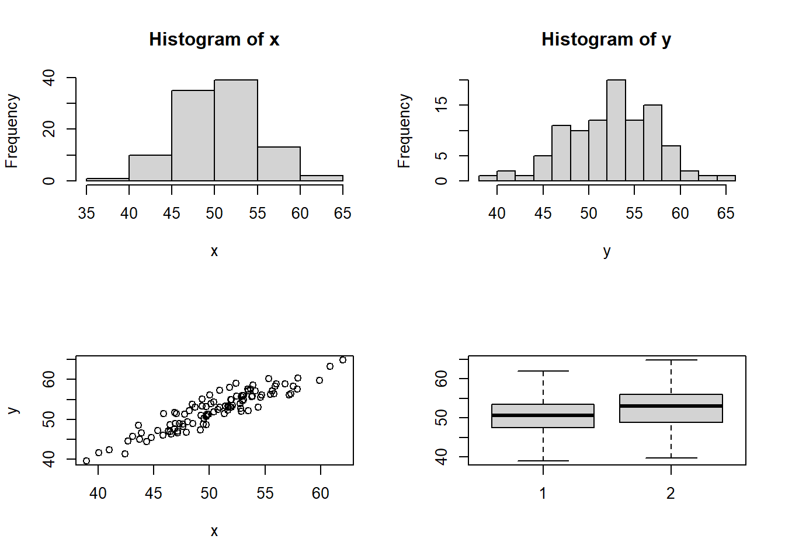
Remark: different bin widths will give you histograms with different looks.
4.5 Box Plot
Let’s take a look at another dataset ToothGrowth. In particular, supp is a factor.
as_tibble(ToothGrowth)
## # A tibble: 60 x 3
## len supp dose
## <dbl> <fct> <dbl>
## 1 4.2 VC 0.5
## 2 11.5 VC 0.5
## 3 7.3 VC 0.5
## 4 5.8 VC 0.5
## 5 6.4 VC 0.5
## 6 10 VC 0.5
## 7 11.2 VC 0.5
## 8 11.2 VC 0.5
## 9 5.2 VC 0.5
## 10 7 VC 0.5
## # ... with 50 more rowsBox plot with basic graphics (using plot)

Box plot with basic graphics (using boxplot)
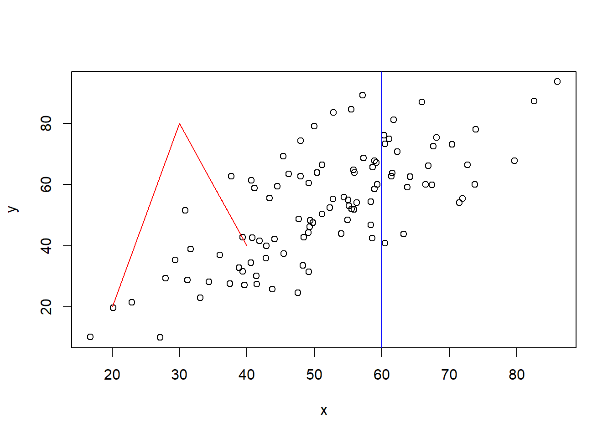
Box plot with basic graphics + interaction of two variables on x-axis (using boxplot)

Box plot with ggplot2
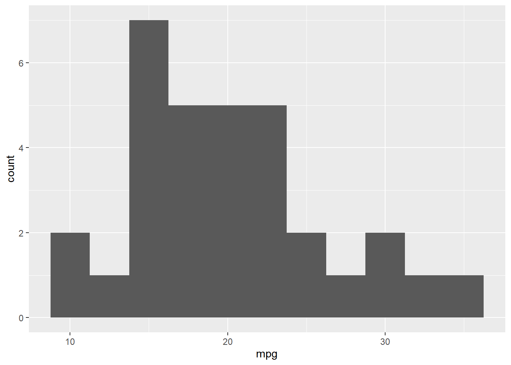
Box plot with ggplot2 + interaction of two variables on x-axis

What will happen if dose take a lot more values?

4.6 Plotting a function curve
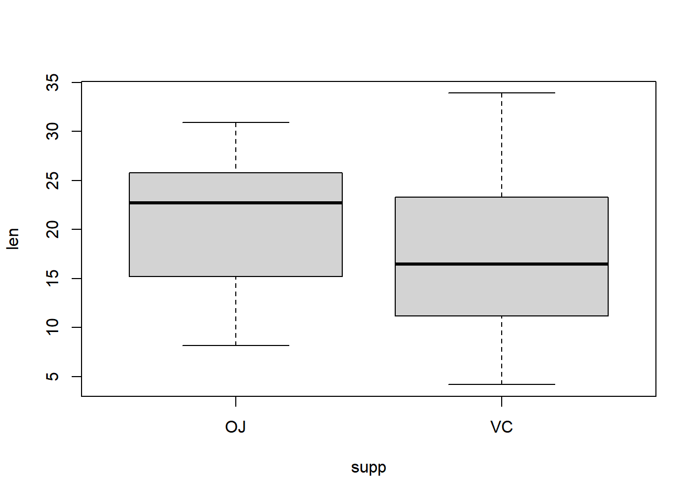 Alternatively:
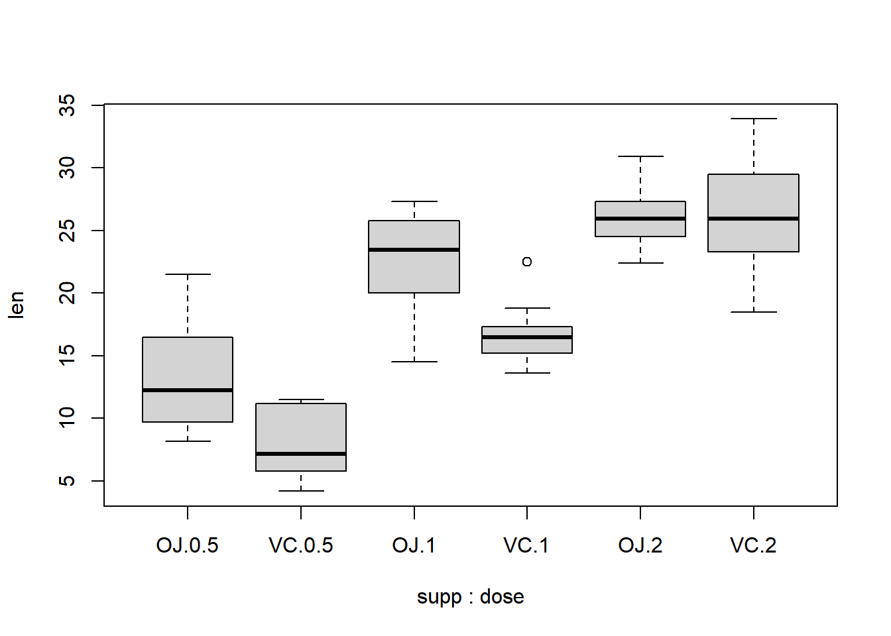
Plotting a built-in function
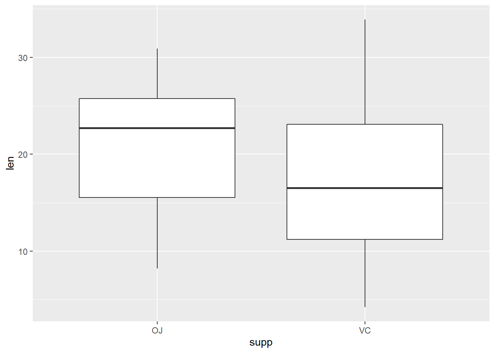
Plotting a self-defined function
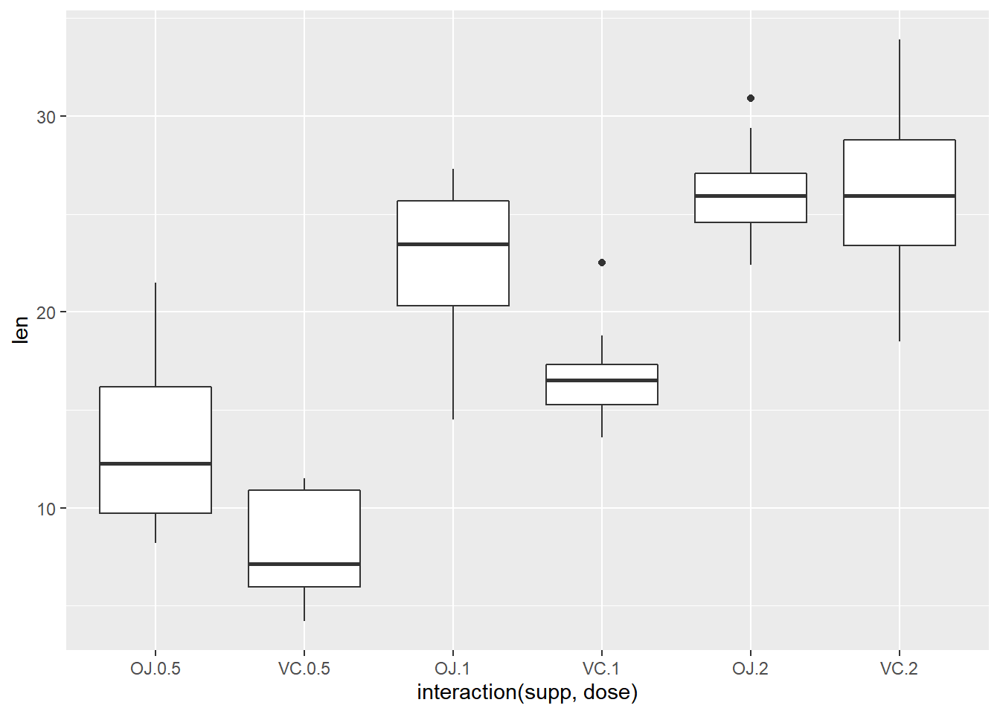
Plotting a function with additional arguments
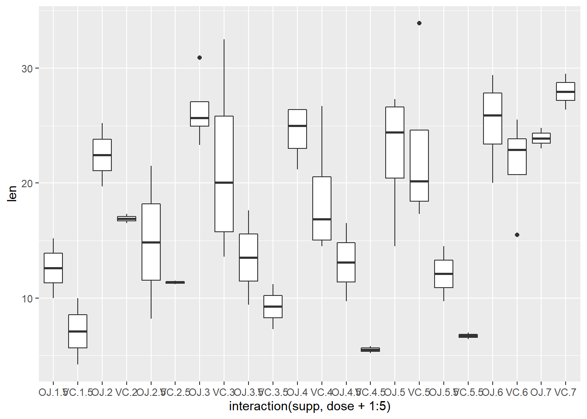
4.7 More on plots with base R
4.7.1 Multi-frame plot
To create a 3x2 multi-frame plot. Use par(mfrow = c(3, 2)).
set.seed(1)
x <- rnorm(100, 50, 5)
y <- x + rnorm(100, 2, 2)
# create a 2x2 multi-frame plot
par(mfrow=c(2, 2))
hist(x)
hist(y,breaks = 10)
plot(x, y)
boxplot(x, y)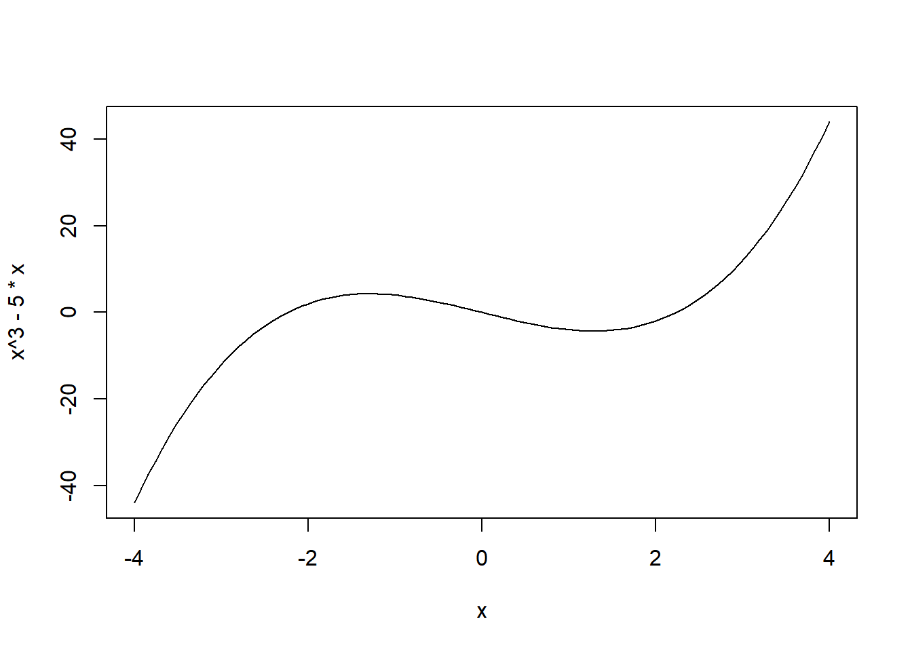
4.7.2 Type of Plot
| Option | Type |
|---|---|
type = "p" |
Points (default) |
type = "l" |
Lines connecting the data points |
type = "b" |
Points and non-overlapping lines |
type = "h" |
Height lines |
type = "o" |
Points and overlapping lines |
par(mfrow=c(3, 2))
x <- -5:5
y <- x^2
plot(x, y)
plot(x, y, type = "p")
plot(x, y, type = "l")
plot(x, y, type = "b")
plot(x, y, type = "h")
plot(x, y, type = "o")
4.7.3 Parameters of a plot
| Parameter | Meaning |
|---|---|
type |
See Type of Plot |
main |
Title |
sub |
Subtitle |
xlab |
x-axis label |
ylab |
y-axis label |
xlim |
x-axis range |
ylim |
y-axis range |
pch |
Symbol of data points |
col |
Color of data points |
lty |
Type of the line |
To illustrate some of the components:
set.seed(1)
x <- rnorm(100, 50, 15)
y <- x + rnorm(100, 2, 13)
plot(x, y, col = "red", pch = 15, main = "This is the title", xlim = c(0, 100),
ylim = c(0,100), xlab = "name of x-axis", ylab = "name of y-axis")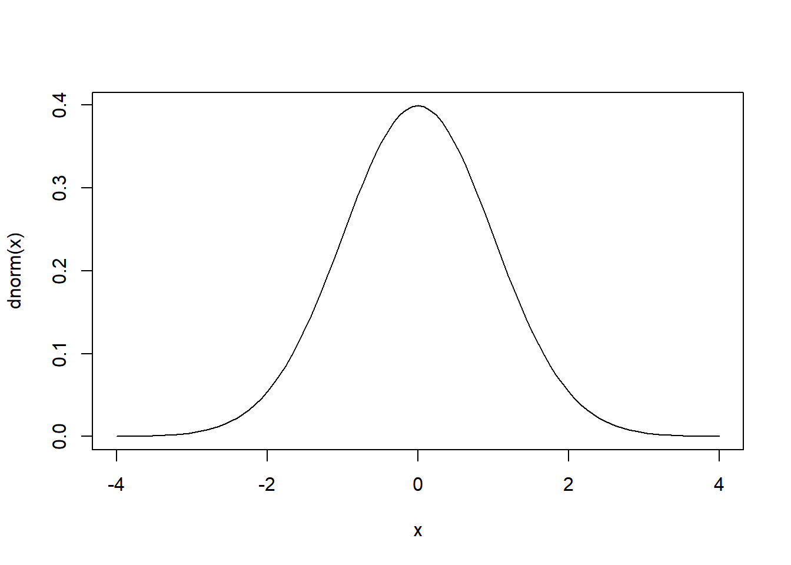
4.7.4 Elements on plot
| Function | Description |
|---|---|
abline(c,m) |
plot the line y = mx +c |
abline(h = a) |
plot the line y = a |
abline(v = b) |
plot the line x = b |
lines(x,y) |
line joining points with coordinates (x,y) |
set.seed(1)
x <- rnorm(100, 50, 15)
y <- x + rnorm(100, 2, 13)
plot(x, y)
# connect the points (20, 20), (30, 80), (40, 40) with a line
lines(x = c(20, 30, 40),y = c(20, 80, 40), col = "red")
abline(v = 60, col = "blue")